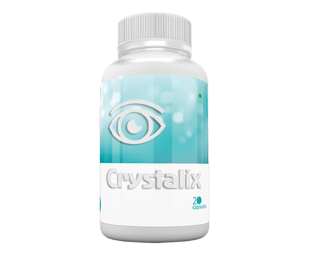

मेरी उम्र 38 साल है और मैंने अपनी पूरी जिन्दगी चश्मा पहना है। यूनिवर्सिटी से पहले, मेरी दोनों आँखों की नजर -2.00 थी। मैंने चश्मा लगाया और उस दिन के बाद से वे हर समय मेरी नाक पर चिपके रहते थे। बाद में, मैंने कॉन्टैक्ट लेंस पहनना शुरू किया ।
मुझे अकाउंटेंट की नौकरी मिल गई और मेरी नजर और भी खराब हो गई। यह -3.00 तक चली गयी। कभी-कभी, मैंने चश्मा पहना था, और कभी-कभी, मैं उनकी जगह कॉन्टेक्ट लेंस लगाता था। यह एक दुष्चक्र था। चश्मे ने मेरी नाक को चोट पहुंचाई, और अलग-अलग चीजों पर ध्यान देकर मैं चकरा गया। कॉन्टेक्ट लेंस से मेरी आँखों से पानी आने लगता था, और इस सब के ऊपर, मुझे कंजक्टीवाइटिस हो गयी। मैं इतनी तंग आ गई थी कि मैंने सर्जरी का फैसला किया।
मैं आंखों की सर्जरी कराने के बारे में सोच रहे थी लेकिन इसे टालती रही क्योंकि मैं बहुत डरी हुई थी। डर से मुझे लकवा मार गया और मुझे नहीं पता था कि मुझे क्या करना है। मेरे दोस्त और सहकर्मी कहते रहे कि यह एक बुरा विचार था। जाहिर है, सर्जरी का सहारा लिए बिना नजर ठीक करने का रास्ता था। लेकिन किसी वजह से, मैं उनकी बात नहीं सुनना चाहती थी। मैंने सोचा कि यह सच नहीं था। उन्होंने कहा कि 12-17 दिनों के भीतर अपनी नजर को असरदार रूप से ठीक करना संभव था। उस समय, मैंने उनकी बात नहीं सुनी।
एक दिन, मैं लंच ब्रेक के दौरान एक कप चाय लेकर बैठी थी। मैं अपने सहयोगियों को बात करते हुए सुनती हूं कैसे उन्होंने बिना सर्जरी के अपनी नजर को ठीक किया था। मुझे एहसास हुआ कि मुझे अपनी सर्जरी की इतनी धुन सवार थी कि मैंने यह भी ध्यान नहीं दिया कि उन सभी ने चश्मा पहनना बंद कर दिया था।
और उन्होंने यह कैसे किया। एक महीने पहले, वे ऑनलाइन शॉप ब्राउज़ कर रहे थे और उन्हें Crystalix मिला। इस कैप्सूल की कई ब्लॉगर्स द्वारा काफी सलाह दी गई थी। रिव्यू पढ़ने के बाद उन लोगों ने अपने कैप्सूल ऑर्डर कर दिए। उत्पाद जल्दी आ गया और उन्होंने डिलीवरी पर इसका पेमेंट किया। परिणाम काफी चौंकाने वाले थे: मनोरमा की नजर -2.50 से 1.00 तक सुधर गई थी, कविता की +1.50 से 1.00 हो गई, और काजल की -4.00 से -1.00 डायोप्टर हो गयी। और उन्होंने ये नतीजे सिर्फ 15 दिन में हासिल किए, कैप्सूल का धन्यवाद।
मैंने अपने दांत भीँच लिए और सोचा कि असल में, मेरे पास खोने के लिए कुछ नहीं था और आगे बढ़ने और इसे आजमाने का फैसला भी किया। मैंने अपना ऑर्डर किया और जल्द ही कैप्सूल डाक आ गए । ।
यह एक साधारण कैप्सूल की तरह दिखता है। कैप्सूल को इस्तेमाल करना बहुत सरल है। बस हमें इस कैप्सूल को हर दूसरे दिन एक गिलास पानी के साथ लेना है। यह समय ख़राब करने वाला नहीं है और यह बहुत अच्छा और सुखदायक लगता है। कैप्सूल चरण-दर-चरण निर्देशों के साथ आता है जो बताता है कि अपनी नजर सुधारने के लिए क्या करना है।
मैंने रोजाना कैप्सूल लेना शुरू कर दिया। सब कुछ आसान था और इसमें रोजाना 15 मिनट से ज्यादा नहीं लगे। मैंने इसे लगभग 2 सप्ताह तक रोजाना लिया ...
फिर मैं अपनी आँखों की जाँच करवाने गयी और बिल्कुल चौंक गयी ...
मेरी नजर -3.00 से -1.00 तक सुधर गयी थी! एक हफ्ते बाद, यह 0.7 डायोप्टर्स थी! मैं बहुत खुश थी। मैं 3 सप्ताह में -3.00 से 0.7 डायोप्टर्स हो गई! क्या आप इस पर विश्वास कर सकते हैं? बस 3 सप्ताह में! मैं अभी भी सदमे में हूं कि मैं अब सब कुछ साफ़ बिना चकाचौंध या धुंधलेपन के देख सकती हूं।
इस बीच, हेल्थकेयर सिस्टम सर्जरी, चश्मा और कॉन्टैक्ट लेंस के लिए पेमेंट कराके हमें चूना लगाती रही ... क्योंकि सच में, आँखों के डॉक्टर ने इस कैप्सूल लेने की सलाह क्यों नहीं दी? यह समझाना आसान है: वह अपने मरीजों को खोने से डरता है।
यहाँ वेबसाइट है जहाँ मैंने कैप्सूल का ऑर्डर दिया है। यह Crystalix बेचने के लिए आधिकारिक तौर पर अधिकृत एकमात्र कंपनी है। इसकी कीमत कॉन्टैक्ट लेंस के 3 पैक या 4 मूवी टिकट के बराबर है। बेकार चश्मे और कॉन्टैक्ट लेंस को देख कर, खुद तय करें कि यह पैसा ज़्यादा तो नहीं है।
दोस्तों, मुझे उम्मीद है कि मेरी कहानी आपकी मदद करेगी और आप आखिरकार अपनी कीमती नजर को ठीक करेंगे। यदि आप में से किसी ने भी इस तरीके का उपयोग किया है, तो नीचे दिए गए कमेंट्स में अपनी राय साझा करें।
Crystalix की ऑफिशियल वेबसाइट